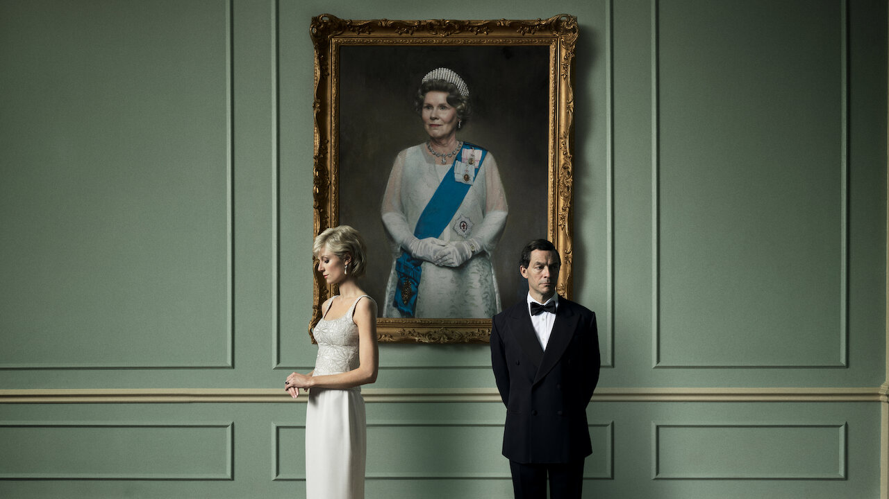

Directed by Peter Morgan
Based on an award-winning play ("The Audience") by showrunner Peter Morgan, this lavish Netflix original drama chronicles the life of Queen Elizabeth II from the 1940s to modern times. The series begins with an inside look at the early reign of the queen, who ascended the throne at age 25 after the death of her father, King George VI. As the decades pass, personal intrigues, romances, and political rivalries are revealed that played a big role in events that shaped the later years of the 20th century.
Claire Foy

Elizabeth Debicki

Tobias Menzies

Regardless of what you may think of the Royals, Netflix has poured a ton of money into this exquisite production about the life of Queen Elizabeth. It is a show that requires fixed attention as things progress at an unhurried pace. The opening musical evolution is enchanting and never gets old. Actress Claire Foy is beautifully riveting in the role of Elizabeth, someone who wants to have a normal life yet is made to feel her duty as Queen should be the highest priority. It has been suggested the Queen is warm, has a sense of humor, and is compassionate, and this portrayal conveys that. She is wise enough to realize she's going to have to forge her own path as those around her are stymied by their own limitations or ignorance. John Lithgow transforms into Winston Churchill and is equally stellar. Their scenes together are superb. If Peter Morgan's research is accurate, I can fully appreciate how Princess Diana must have felt. The show is rounded out by a wonderful supporting cast. This show is my favorite Netflix production so far.